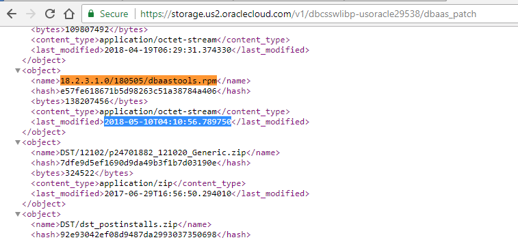
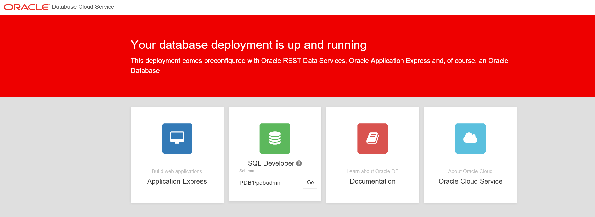
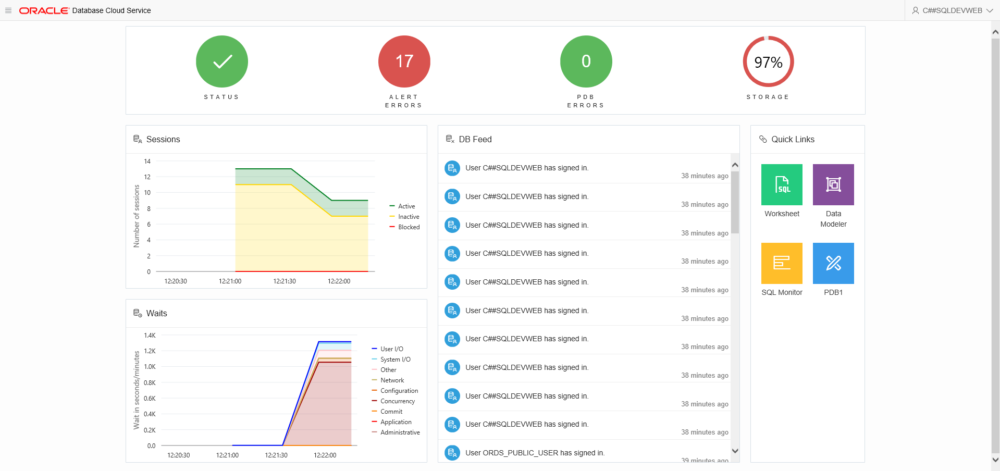
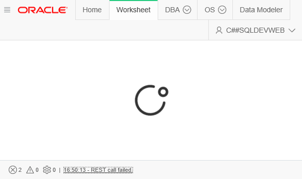

This was first published on https://www.dbi-services.com/blog/sql-developer-web-on-the-oracle-cloud/ (2018-05-10)
Republishing here for new followers. The content is related to the versions available at the publication date.
. 
You like SQL Developer because it is easy to install (just unzip a jar) and has a lot of features? Me too. It can be even easier if it is provided as a web application: no installation, and no java to take all my laptop RAM…
When I say no installation, you will see that you have some little things to setup here in DBaaS. That will probably be done for you in the managed services (PDBaaS) such as ‘Express’ and ‘Autonomous’ ones.
Be careful, Oracle is a Top-Down deployment company. It seems that new products are announced first and then people have to work hard to make them available. Which means that if, like me, you want to test them immediately you may encounter some disappointment.
The announce was there. The documentation was there, mentioning that the Cloud Tooling must be upgraded to 18.2.3. But 18.2.3 was there only a few days later. You can check it from the place where the DBaaS looks for its software. Check from https://storage.us2.oraclecloud.com/v1/dbcsswlibp-usoracle29538/dbaas_patch if you a are not sure.
So, before being able to see SQL Developer in the colorful DBaaS landing page (where you can also access APEX for example) there’s a bit of command line stuff to do as root.
SQL Developer Web needs to be installed with the latest version of ORDS, which is installed with the latest version of Cloud Tooling aka dbaastools.rpm
You need to connect as root, so opc and then sudo
ssh opc@144.21.89.223
sudo su
Check if there is a new version to install:
dbaascli dbpatchm --run -list_tools | awk '/Patchid/{id=$3}END{print id}'
If something is returned (such as 18.2.3.1.0_180505.1604) you install it:
dbaascli dbpatchm --run -toolsinst -rpmversion=$(dbaascli dbpatchm --run -list_tools | awk '/Patchid/{id=$3}END{print id}')
Actually I got an error, and I had to ^C:
[root@DB18c opc]# dbaascli dbpatchm --run -toolsinst -rpmversion=$(dbaascli dbpatchm --run -list_tools | awk '/Patchid/{id=$3}END{print id}')
DBAAS CLI version 1.0.0
Executing command dbpatchm --run -toolsinst -rpmversion=18.2.3.1.0_180505.1604 -cli
/var/opt/oracle/patch/dbpatchm -toolsinst -rpmversion=18.2.3.1.0_180505.1604 -cli
Use of uninitialized value in concatenation (.) or string at /var/opt/oracle/patch/dbpatchm line 4773.
^C
But finally, it was installed because the ‘list_tools’ above returns nothing.
SQL Developer Web (SDW) is running in ORDS (Oracle REST Data Services) and must be enabled with the ORDS Assistant with the enable_schema_for_sdw action.
Here I’ll enable it at CDB level. I provide a password for the SDW schema. I create it in a file:
cat > password.txt <<<'Ach1z0#d'
You may secure that better than I do, as I’m putting the password on command line here. But this is only a test.
Then, still as root, I call the ORDS assistant to install SDW in C##SQLDEVWEB (as I’m installing it in CDB$ROOT I need a common user name).
/var/opt/oracle/ocde/assistants/ords/ords -ords_action=enable_schema_for_sdw -ords_sdw_schema="C##SQLDEVWEB" -ords_sdw_schema_password=$PWD/password.txt -ords_sdw_schema_enable_dba=true
Here is the output. The last lines are important:
WARNING: Couldn't obtain the "dbname" value from the assistant parameters nor the "$OCDE_DBNAME" environment variable
Starting ORDS
Logfile is /var/opt/oracle/log/ords/ords_2018-05-10_10:44:12.log
Config file is /var/opt/oracle/ocde/assistants/ords/ords.cfg
INFO: Starting environment summary checks...
INFO: Database version : 18000
INFO: Database CDB : yes
INFO: Original DBaaS Tools RPM installed : dbaastools-1.0-1+18.1.4.0.0_180123.1336.x86_64
INFO: Actual DBaaS Tools RPM installed : dbaastools-1.0-1+18.2.3.1.0_180505.1604.x86_64
INFO: DBTools JDK RPM installed : dbtools_jdk-1.8.0-2.74.el6.x86_64
INFO: DBTools JDK RPM "/var/opt/oracle/rpms/dbtools/dbtools_jdk-1.8.0-2.74.el6.x86_64.rpm" MD5 : 48f13bb401677bfc7cf0748eb1a6990d
INFO: DBTools ORDS Standalone RPM installed : dbtools_ords_standalone-18.1.0.11.22.15-1.el6.x86_64
INFO: DBTools ORDS Standalone RPM "/var/opt/oracle/rpms/dbtools/dbtools_ords_standalone-18.1.0.11.22.15-1.el6.x86_64.rpm" MD5 : 480355ac3ce0f357d5741c2c2f688901
INFO: DBTools DBaaS Landing Page RPM installed : dbtools_dbaas_landing_page-2.0.0-1.el6.x86_64
INFO: DBTools DBaaS Landing Page RPM "/var/opt/oracle/rpms/dbtools/dbtools_dbaas_landing_page-2.0.0-1.el6.x86_64.rpm" MD5 : af79e128a56b38de1c3406cfcec966db
INFO: Environment summary completed...
INFO: Action mode is "full"
INFO: Database Role is "PRIMARY"
INFO: Enabling "C##SQLDEVWEB" schema in "CDB$ROOT" container for SQL Developer Web...
SQL*Plus: Release 18.0.0.0.0 Production on Thu May 10 10:44:27 2018
Version 18.1.0.0.0
Copyright (c) 1982, 2017, Oracle. All rights reserved.
Connected to:
Oracle Database 18c EE Extreme Perf Release 18.0.0.0.0 - Production
Version 18.1.0.0.0
SQL> SQL> SQL> SQL> SQL> SQL> SQL> SQL Developer Web user enable starting...
Enabling "C##SQLDEVWEB" user for SQL Developer Web...
PL/SQL procedure successfully completed.
PL/SQL procedure successfully completed.
Creating "C##SQLDEVWEB" user
PL/SQL procedure successfully completed.
PL/SQL procedure successfully completed.
PL/SQL procedure successfully completed.
Call completed.
Commit complete.
PL/SQL procedure successfully completed.
Session altered.
PL/SQL procedure successfully completed.
PL/SQL procedure successfully completed.
"C##SQLDEVWEB" user enabled successfully. The schema to access SQL Developer Web
is "c_sqldevweb"...
PL/SQL procedure successfully completed.
SQL Developer Web user enable finished...
Disconnected from Oracle Database 18c EE Extreme Perf Release 18.0.0.0.0 - Production
Version 18.1.0.0.0
INFO: To access SQL Developer Web through DBaaS Landing Page, the schema "c_sqldevweb" needs to be provided...
INFO: "C##SQLDEVWEB" schema in the "CDB$ROOT" container for SQL Developer Web was enabled successfully...
The information to remember here is that I will have to provide the c_sqldevweb schema name (which is the schema name I’ve provided but lowercased and with sequences of ‘special’ characters replaced by an underscore). It is lowercased, but it seems that the schemaname has to be provided in uppercase.
Basically what has been done is quite simple: create the C##SQLDEVWEB user and call ORDS.ENABLE_SCHEMA to enable it and map it to the url.
Now I’m ready to see SQL Developer on the DBCS Landing Page. You access this page by:
You may have to accept some self-signed certificates
And here it is with SQL Developer Web in the middle: 
The above shows PDB1/pdbadmin for the schema but I installed it at CDB level and the log above tells me that the schema is c_sqldevweb, so given the input, I change the schema to c_sqldevweb then on the login page. Finally, the direct url in my example is https://144.21.89.223/ords/c_sqldevweb/_sdw.
I enter C##SQLDEVWEB (uppercase here) as the user and Ach1z0#d as the password.
And here is the Dashboard: 
Do not worry about the 97% storage used which tells me that SYSTEM is full. My datafiles are autoextensible.
Just go to the SQL Worksheet and check your files:
select tablespace_name,bytes/1024/1024 "MBytes", maxbytes/1024/1024/1024 "MaxGB", autoextensible from dba_data_files
To enable a PDB local user, I run ORDS assistant with a local user name (PDBADMIN here) and an additional parameter with the PDB name (PDB1 here).
cat > password.txt <<<'Ach1z0#d'
/var/opt/oracle/ocde/assistants/ords/ords -ords_action=enable_schema_for_sdw -ords_sdw_schema=PDBADMIN -ords_sdw_schema_password=$PWD/password.txt -ords_sdw_schema_enable_dba=true -ords_sdw_schema_container=PDB1
Now, I can connect to it with PDB1/pdbadmin as schema name.

If, like me, you are not used to ORDS applications, you may waste some minutes looking at a splash screen waiting for the result. Always look at the message bar. All actions are REST calls and the message bar will show if a call is running or completed successfully or not. The example on the right shows ‘call failed’. You can click on it to see the REST call, and the error.
{kind=link}
{kind=link}
{kind=link}
{kind=link}